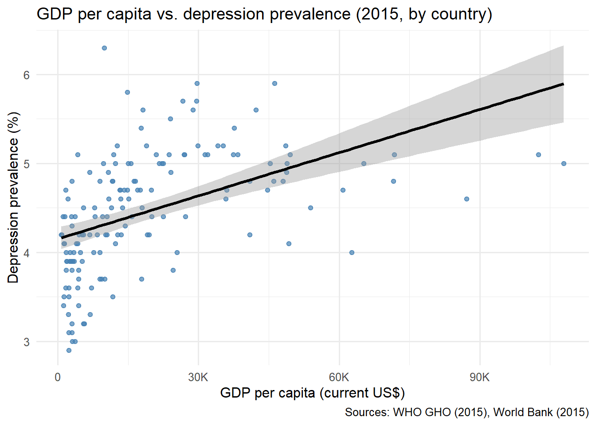
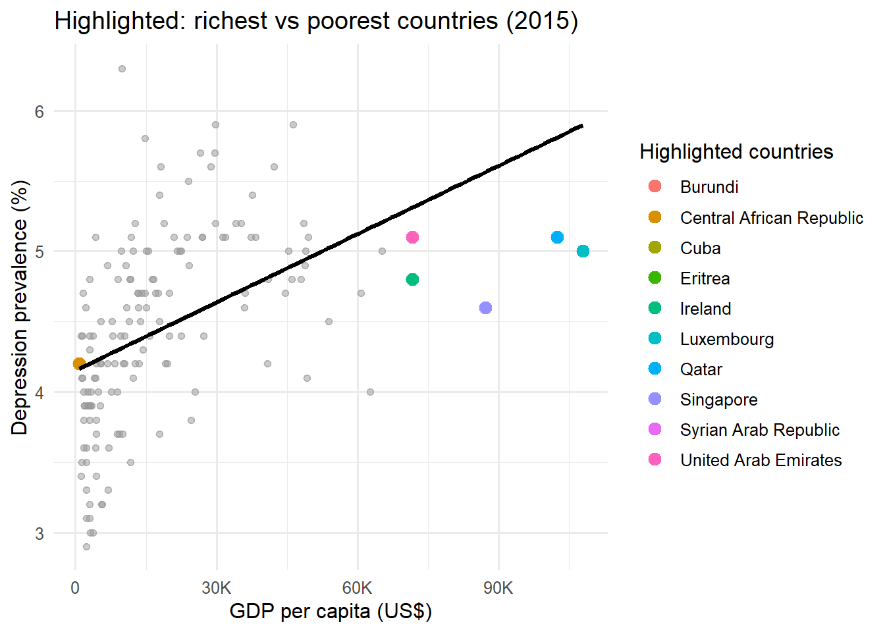
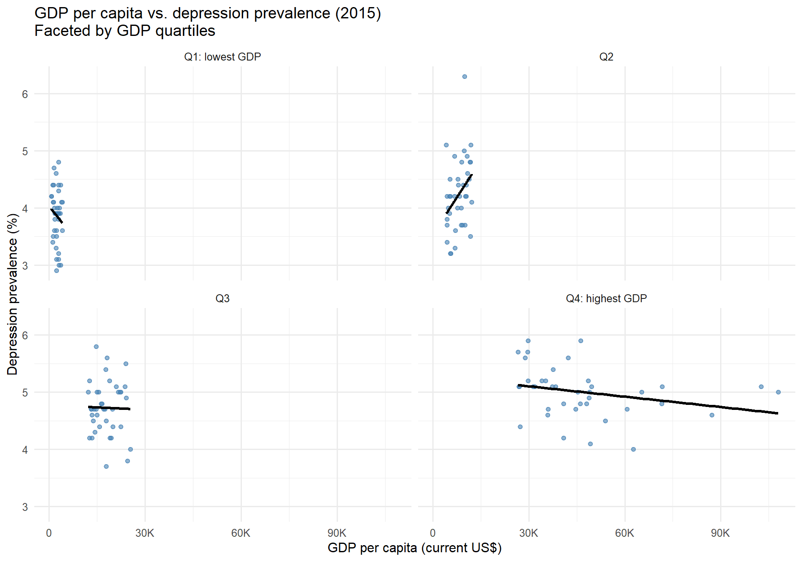
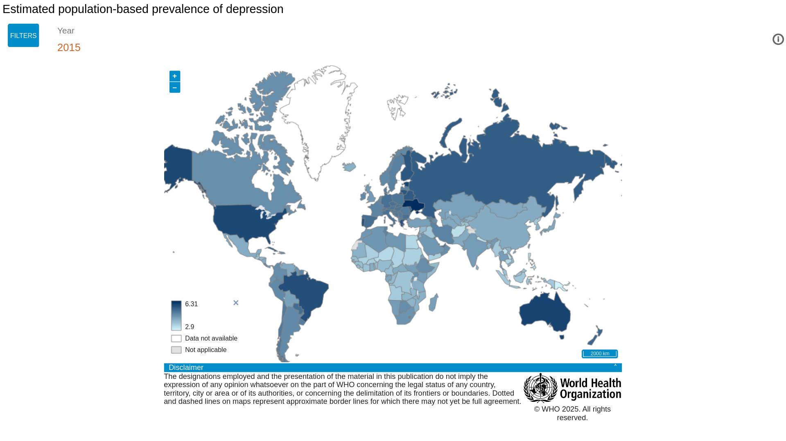

library(readr)
library(dplyr)
library(janitor)
library(tidyr)
library(ggplot2)
library(scales)
# Read CSV file）
dep_raw <- read_csv("depression_data.csv")
gdp_raw <- readr::read_csv("gdp_data.csv", skip = 4, show_col_types = FALSE)
# Cleaning WHO Depression Rate Data
dep_clean <- dep_raw %>%
clean_names() %>%
rename(Country = location, DepressionRate = value, Year = period) %>%
filter(!is.na(DepressionRate))
# Organize GDP data
gdp_long <- gdp_raw %>%
janitor::clean_names() %>% # Country Name -> country_name; 1960 -> x1960
dplyr::select(country_name, matches("^x[0-9]{4}$")) %>%
tidyr::pivot_longer(
cols = matches("^x[0-9]{4}$"),
names_to = "Year",
values_to = "GDP_per_capita"
) %>%
dplyr::mutate(
Year = as.integer(sub("^x", "", Year)) # x1960 -> 1960
) %>%
dplyr::rename(Country = country_name) %>%
dplyr::select(Country, Year, GDP_per_capita)
# Merge two datasets
dep_gdp <- dep_clean %>%
inner_join(gdp_long, by = c("Country", "Year"))
# Extract data from 2015
dat_latest <- dep_gdp %>%
filter(Year == 2015)Example analysis: Global Depression
Research question
Does a country’s economic development (GDP per capita) relate to the prevalence of depressive disorders globally？
Intended audience
Public-health stakeholders who want a compact, visual overview of the GDP–depression relationship.
Data sources
- Depression prevalence: WHO Global Health Observatory (population-based prevalence of depression).
Source page (indicator & dictionary): https://www.who.int/data/gho/data/indicators/indicator-details/GHO/estimated-population-based-prevalence-of-depression
- GDP per capita: World Bank, GDP per capita (current US$).
Source page & metadata: https://data.worldbank.org/indicator/NY.GDP.PCAP.CD
Load and tidy data
Plots
Note
The data only represent 2015 and may not reflect more recent global trends in mental health.
1) GDP per capita vs. depression prevalence (2015)
p1 <- ggplot(dat_latest, aes(GDP_per_capita, DepressionRate)) +
geom_point(alpha = 0.7, color = "steelblue") +
geom_smooth(method = "lm", se = TRUE, color = "black") +
scale_x_continuous(
labels = scales::label_number(scale_cut = scales::cut_short_scale())
) +
labs(
title = "GDP per capita vs. depression prevalence (2015, by country)",
x = "GDP per capita (current US$)",
y = "Depression prevalence (%)",
caption = "Sources: WHO GHO (2015), World Bank (2015)"
) +
theme_minimal(base_size = 12)
p1 
2) Highlight top and bottom GDP countries
top_bottom <- dat_latest |>
arrange(desc(GDP_per_capita)) |>
slice(c(1:5, (n()-4):n()))
p2 <- ggplot(dat_latest, aes(GDP_per_capita, DepressionRate)) +
geom_point(alpha = 0.5, color = "gray60") +
geom_point(data = top_bottom, aes(color = Country), size = 3) +
geom_smooth(method = "lm", se = FALSE, color = "black") +
scale_x_continuous(
labels = scales::label_number(scale_cut = scales::cut_short_scale())
) +
labs(
title = "Highlighted: richest vs poorest countries (2015)",
x = "GDP per capita (US$)",
y = "Depression prevalence (%)",
color = "Highlighted countries"
) +
theme_minimal(base_size = 12)
p2
3) Faceted plot — GDP vs. depression prevalence (2015)
# By GDP quartile
dat_facet <- dat_latest %>%
dplyr::filter(!is.na(GDP_per_capita), !is.na(DepressionRate)) %>%
dplyr::mutate(
GDP_quartile = dplyr::ntile(GDP_per_capita, 4),
GDP_quartile = factor(
GDP_quartile,
levels = c(1, 2, 3, 4),
labels = c("Q1: lowest GDP", "Q2", "Q3", "Q4: highest GDP")
)
)
### 3) Faceted plot — GDP vs. depression prevalence (2015)dat_facet <- dat_latest %>%
dplyr::filter(!is.na(GDP_per_capita), !is.na(DepressionRate)) %>%
dplyr::mutate(
GDP_quartile = dplyr::ntile(GDP_per_capita, 4),
GDP_quartile = factor(GDP_quartile, levels = 1:4,
labels = c("Q1: lowest GDP","Q2","Q3","Q4: highest GDP"))
)
p3 <- ggplot(dat_facet, aes(GDP_per_capita, DepressionRate)) +
geom_point(alpha = 0.6, color = "steelblue") +
geom_smooth(method = "lm", se = FALSE, color = "black") +
scale_x_continuous(labels = scales::label_number(scale_cut = scales::cut_short_scale())) +
labs(
title = "GDP per capita vs. depression prevalence (2015)\nFaceted by GDP quartiles",
x = "GDP per capita (current US$)",
y = "Depression prevalence (%)"
) +
facet_wrap(~ GDP_quartile, nrow = 2) +
theme_minimal(base_size = 12)
p3 
4) External image

Source: World Health Organization — GHO Indicator Data Portal.
Summary
Tip
When interpreting the plots, keep in mind that correlation does not imply causation.
Additional factors such as healthcare systems, culture, and reporting accuracy may also influence the data.
Why this matters
Global mental health policy should consider both social and economic determinants.
Overall, countries with higher GDP per capita tend to exhibit lower depression prevalence. The linear trend shows a moderate negative relationship.
However, several exceptions exist—some middle-income countries have relatively high reported depression rates. The pattern suggests that while economic growth may reduce mental health burden indirectly, other social and cultural factors play a major role.
4) Function summary
| Package | Example functions used |
|---|---|
| dplyr | filter(), mutate(),rename(), select(), inner_join() |
| tidyr | pivot_longer() |
| ggplot2 | geom_point(), geom_smooth(), labs(), scale_x_continuous() |
References
Patel, Vikram, Shekhar Saxena, Crick Lund, and et al. 2018. “The Lancet Commission on Global Mental Health and Sustainable Development.” The Lancet 392 (10157): 1553–98. https://doi.org/10.1016/S0140-6736(18)31612-X.
World Bank. 2025. “GDP Per Capita (Current US$) (NY.GDP.PCAP.CD).” 2025. https://data.worldbank.org/indicator/NY.GDP.PCAP.CD.
World Health Organization. 2017. “Estimated Population-Based Prevalence of Depression (GHO Indicator).” 2017. https://www.who.int/data/gho/data/indicators/indicator-details/GHO/estimated-population-based-prevalence-of-depression.